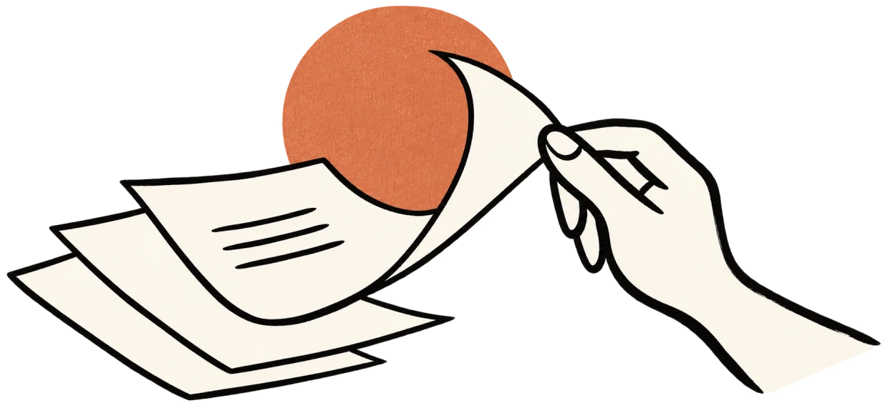

Your study room / 练习室
今天，从哪里开始？
翻开一份过去问，对照一本答案，或者认真做一道题。
选一条适合今天的路径，慢慢来。
01 / Past papers按学校查阅

過去問題を読む
过去问题库
看看历年考试，真正问了什么。
按大学、研究科与年份，查阅完整真题原卷。
整份原卷 · 历年真题进入问题库
02 / Practice题库筹备中
一問ずつ、理解する
刷题练习
把知识点，慢慢练成自己的理解。
题库暂未收录题目，可先查阅过去问和练习册答案。
分类练习 · 错题复盘查看筹备状态
03 / Answers按书查阅
解答を、本棚から
答案
练习册的解答，按书放在书架上。
点开一本，输入题号，或从头读下去。
书架 · 按题号翻到解答打开答案
三条路径，各有自己的节奏。
还没确定范围？先查考试科目 →过去问、练习册答案与刷题题库会逐步添加。这里先为每一份资料、每一次练习留好位置。